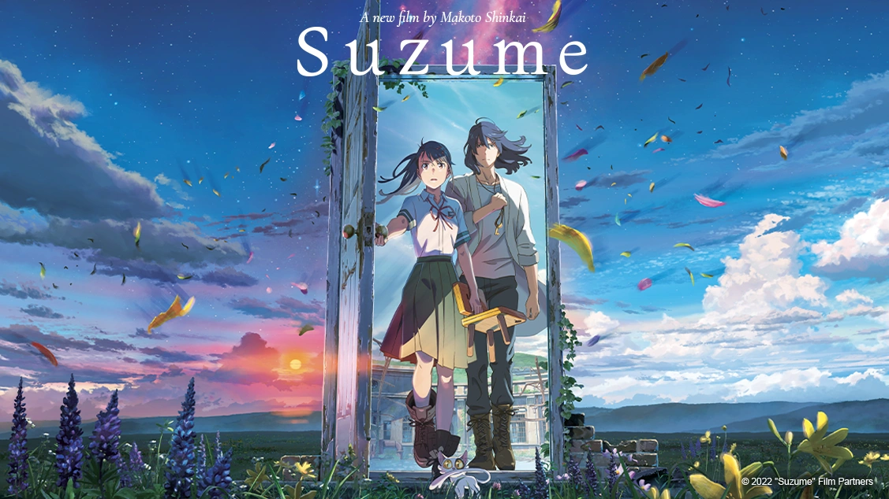

Kedvencek
Pál Petúr
Az oldalt Pál Petúr S13 tanuló készítette
Suzume
Egy lány kinyit egy amiből egy szörny jön elő ami megtámadja Japánt. Ezután a lány és egy székké változtatott fiú elkezdi üldözni az ajtó zárókövét, aki még több ilyen ajtót nyit ki.
